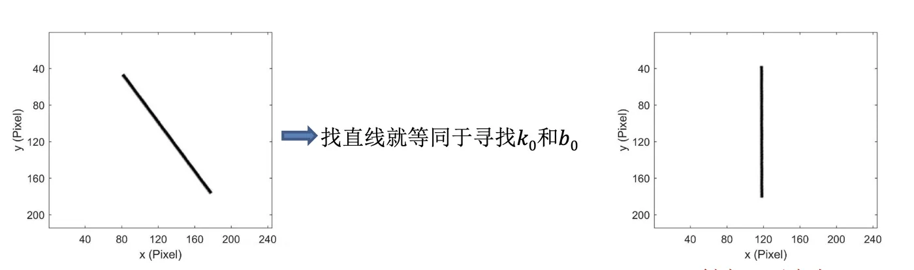
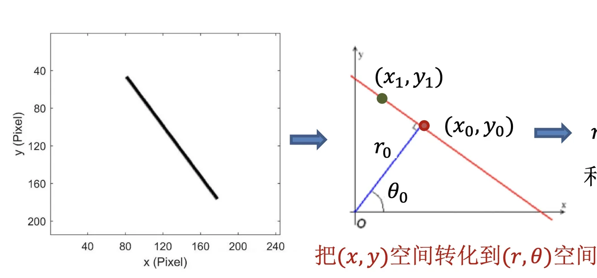
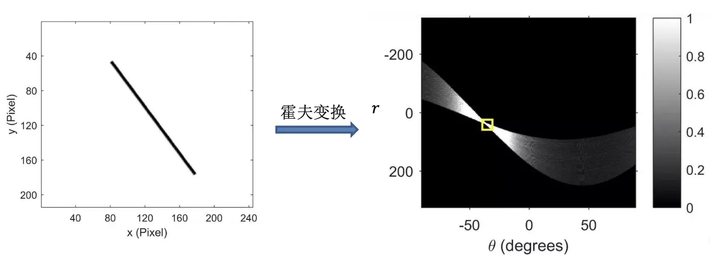
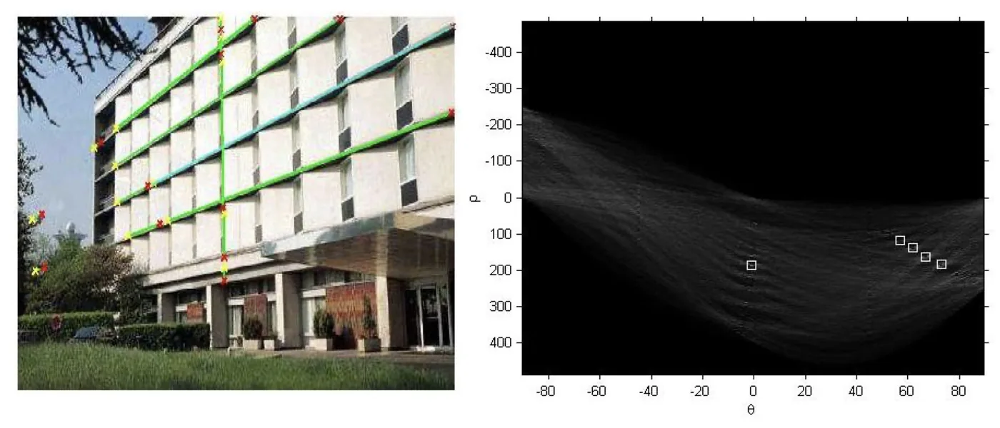
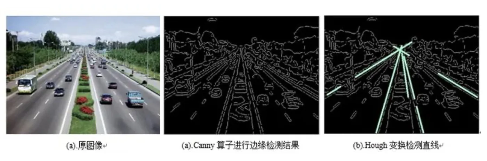
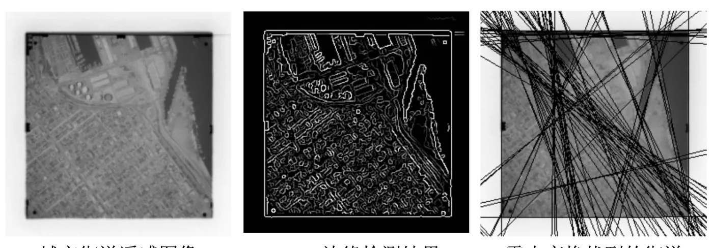

计算机视觉 · 第 3 章 边缘检测与线检测
3.3 霍夫变换
边缘检测交出的是一堆「位于边缘的点」，而我们要的是直线。直接去拟合行不通——一条直线可能的位置有无穷多。霍夫变换换了个问法：不去回答「这条直线在哪里」，而是让每个边缘点自己投票，最后看哪种参数被投得最多。这一节按这条线索展开：先看参数怎么选、为什么这么选就能找到线，再看怎么用投票把它算出来，最后是完整的算法流程与几组应用。
1. 从 y = k0x + b0 说起：找直线就是找参数
平面上的一条直线可以写成
y = k0 x + b0，
决定这条直线的是两个数：斜率 k0 和截距 b0。所以找直线就等同于寻找 k0 和 b0——只要把这两个数定下来，直线就定下来了。
换个角度，从单个边缘点 (x, y) 出发看：经过这个点的直线有无数条，它们对应 (k, b) 平面上的一条直线 b = −x · k + y。也就是说，图像空间里的一个点，对应参数空间里的一条线；反过来，图像空间里共线的许多点，对应的就是参数空间里交于同一点的许多条线。这个「点—线对偶」是霍夫变换的全部基础。
于是问题变成了：在参数空间里，有没有很多条直线交于一点？
但斜截式有两个绕不过去的麻烦：
- 当直线竖直时，斜率 k 趋于无穷大，参数平面里根本画不出来；
- k 和 b 的取值范围没有上界，累加器（要开的那张表）也就没法确定大小。

2. 换一对参数：把 (x, y) 空间转化到 (r, θ) 空间
要绕开「斜率无穷大」，就得换一对有界的参数。霍夫变换用的是极坐标下的直线方程：
r = x cos θ + y sin θ，
其中 r 是原点到这条直线的垂线长度，θ 是这条垂线（也就是直线的法线）与 x 轴的夹角。这一步用初中数学就能推出来：点 (x, y) 与单位向量 (cos θ, sin θ) 的内积，正是这个点在法线方向上的投影长度；直线上所有点的投影都相等，这个公共值就是 r。
换成 (r, θ) 之后，两个麻烦都消失了：θ 只需要取 0° 到 180° 这半个圆周（因为 (r, θ) 与 (−r, θ + 180°) 表示的是同一条直线），r 的绝对值也一定不超过图像的对角线长度。两个参数都落在有限的范围内，累加器这才开得出来。
更关键的是下面这条性质。固定一个边缘点 (x0, y0)，把 x0、y0 代进方程，剩下 r 和 θ 两个变量，式子
r = x0 cos θ + y0 sin θ
在 (r, θ) 平面上是一条正弦曲线：过 (x0, y0) 的所有直线，对应这条曲线上的所有点。课件里红色曲线表示经过 (x0, y0) 的所有直线，绿色曲线表示经过 (x1, y1) 的所有直线；两条曲线交于一点 (θ0, r0)，而这个 (θ0, r0) 所确定的直线，既过 (x0, y0) 又过 (x1, y1)——它就是同时穿过这两个点的那条直线。
结论也就出来了：找直线 → 在霍夫变换后的参数空间找曲线交点！同一条直线上有越多的边缘点，就有越多的曲线交会在同一点上，这一点也就越「显眼」。

3. 累加器：把「交点」变成「票数」
理论上交点就是答案，但实际上没法去解方程：像素坐标是整数，θ 也只能取有限个值，曲线不会精确地交在同一个点上。霍夫变换的办法是不求解、改成投票。
具体做法是把 (r, θ) 参数空间切成一张二维的表格（也就是累加器），让每个边缘点沿着它对应的那条曲线走一遍，走过的格子各记一票。曲线密集交会的地方票数自然堆得最高，峰值所在的格子就是被检测到的直线。课件从第 12 张开始，用连续几张图展示的正是这个过程：图像空间里的边缘点，在参数空间里化成一条条正弦曲线，最后堆出若干明显的峰值，第 14 张、第 15 张是同一过程的后续帧。

4. 霍夫变换的算法流程
把上面的思路写成可执行的步骤，就是课件在第 16 张给出的流程。它的核心思想是建立一个二维矩阵作为累加器，(θ, r) 为矩阵元素：
- 把原始图像转换为灰度图；
- 用边缘检测算法寻找边缘点；
- 初始化元素值全为 0 的矩阵 H；
- 对图像中的每一个边缘点 (x, y)，令 θ 从 0 取到 180，依次计算 r = x cos θ + y sin θ，并让 H[θ, r] += 1；
- 取出矩阵 H 中大于阈值 τ 的元素，其对应的 (θ, r) 即为检测到的直线。
第 4 步是算法的核心，写成伪代码只有两重循环：
for each edge point (x, y) in an image:
for theta = 0 to 180:
r = x * cos(theta) + y * sin(theta)
H[theta, r] += 1每一步为什么这么做，值得逐条说清楚：
- 先转灰度：霍夫变换只关心边缘的位置，颜色信息用不上，先降成一张灰度图可以让后面所有处理都只面对一个通道；
- 先做边缘检测：如果让图像里每一个像素都去投票，既慢又没有意义——平地上的点本来就不该构成直线。用边缘检测把候选点筛一遍，投票的规模立刻降下来，这也正是上一节 Canny 的用处所在；
- 累加器要离散化：H 的行对应 θ 的取值（通常 1° 一格，一共 180 行），列对应 r 的取值（按像素或更细的步长分格），所以 H 是一张实打实的表格；
- 每个点投 180 票：一个边缘点对应参数空间里的一条曲线，实际实现时就是让 θ 走遍 0°～180°，每算出一组 (θ, r) 就给对应格子加一。整个算法的工作量大约是「边缘点个数 × 180」；
- 按阈值挑峰：票数超过 τ 的格子被认为是直线。阈值定得高，只留下证据最充分的直线；定得低，长直线旁边那些票数不多的杂线也会被报出来——一个峰值对应一条直线，这一点在调参时要心里有数。
5. 应用
霍夫变换最直接的应用，就是在边缘图上把直线结构提取出来。课件给了几组实例。
一组是常规图像上的对比实验：原图先经过 Canny 算子做边缘检测，再交给霍夫变换找直线，三步下来只留下被检测到的那些直线。可以清楚地看到，霍夫变换的输出已经不是「边缘点」，而是货真价实的直线——这正是本节开头那个问题的答案。


另一组是遥感影像。城市街道在遥感图里表现为大量规则的直线结构，霍夫变换恰好擅长这件事：

这三张图也正好把整章的链路串了起来：原图 → 边缘检测得到边缘点 → 霍夫变换把边缘点归并成直线。上一节交代了第一步，这一节补上了第二步。
本节小结
- 找直线就是找参数：y = k0x + b0 由 (k0, b0) 决定，但斜截式在竖直线处斜率趋于无穷大，参数范围也没有上界。
- 换成极坐标参数 (r, θ)：直线方程为 r = x cos θ + y sin θ，θ 取 0°～180° 即可，r 的绝对值不超过图像对角线长度，两个参数都有界。
- 点—线对偶是霍夫变换的基础：图像里的一个点，对应参数空间里的一条曲线；共线的许多点，对应交于同一点的许多条曲线。
- 实际实现靠投票：把参数空间离散成累加器 H，每个边缘点在自己走过的格子上加一，票数超过阈值 τ 的 (θ, r) 就是检测到的直线。
- 算法流程：转灰度 → 边缘检测 → 初始化累加器 → 逐点对 θ = 0～180 投票 → 按阈值取峰值；工作量约为「边缘点数 × 180」。